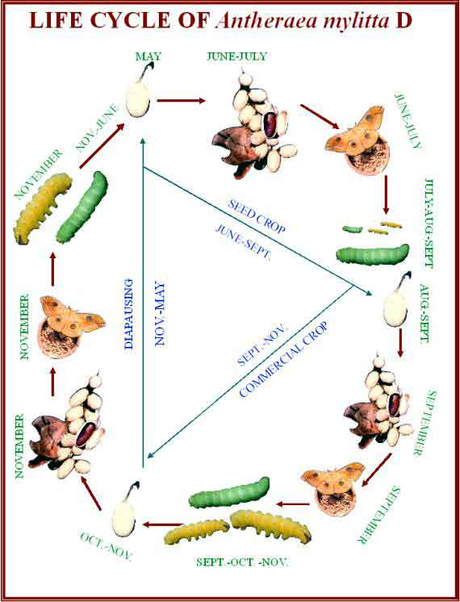

Conservation of germplasm
Conceptually, the principles of genetic resources conservation are
similar, whether dealing with short or long lived genetic material,
domesticated or wild types, except for strategies and methods. The work on germplasm
maintenance depends upon the nature of the material i.e. length of life cycle, mode of reproduction, ecological
status (wild/domesticated) of the individual and objective of maintenance.
The genetic variability can be conserved both under in situ and ex situ conditions.
The methods of conservation of A.
mylitta differ from that of Bombyx
mori which is a domesticated species.

Species like A. mylitta for which knowledge on
ecology and genetics is scarce, conservation of genetic material in in situ condition is the most suitable
method, provided the area can be given protection. Under in situ conservation systematic release of Raily has enabled the
population to perpetuate its generation thereby conserving the genotype in
their natural habitat. For in situ
conservation following methods are being adopted:
i)
Periodic
cordoning off forests for natural multiplication: After identifying a
prospective area a time instituted programme was chalked out to allow
collection of nature grown cocoons in a cyclic manner.
ii)
Introduction
of breeding material in in situ: In
identified area, additional breeding material in the form of seed
cocoons/moths/gravid moths/eggs in Shorea
robusta leaf cups/chawki worms are being released for breeding and
multiplication is being carried out free of interference.
iii)
Exploration
of new ecopockets: New ecopockets were explored in remote forest areas to
serve as an alternate breeding sites. This has paved the way for continued collection
and closing schedules alternately.
iv)
Regular
surveillance is being carried out to check diseases.
v)
In
the conservation task, local tribes residing near the rearing sites are
involved.
Each year with the
conservation programme the population of ecorace – Raily has increased
considerably.
Ex situ conservation
The population of A. mylitta ecoraces are declining
alarmingly in their natural habitat due to rapid deforestation, rampant
collection of wild cocoons and pollution in the forest by coal, mineral and
industrialization. For populations
which are endangered the conservation under in situ condition is not possible, the only way to conserve the
original population is through ex situ
conservation. Ex situ conservation
of A. mylitta eco-race is being
carried out at CTR&TI, Ranchi and following methods of conservation
are practiced.
a) Exploration and collection:
i)
Random
sampling of cocoons of A. mylitta
from their ecological pockets.
ii)
Recording
of meteorological data
iii)
Genetic
resources existing in the nature are being collected for further studies on
quantitative characters.
iv)
Recording
of important ethological parameters during and after diapause.
v)
Maintenance
and acclimatization of ecoraces under ex
situ condition.
vi)
Generation-wise
recording of biological, commercial and technological characters of ecoraces.
vii) Evaluation of ecoraces based on
biological, commercial and technological parameters.
b) Maintenance:
Efforts are being made to
acclimatize the collected ecoraces at CTR&TI, Ranchi and each of the ecorace after
morphological descriptions as per descriptor is being evaluated for the
following parameters:
Biological: Emergence pattern, emergence span,
coupling behaviour, fecundity, hatching (%), larval weight (g.), larval span
(days), effective rate of rearing (%), yield per disease free laying and
cocooning (%).
Commercial: Cocoon weight (g), shell weight (g),
silk ratio (%) and absolute silk yield (g/dfl).
Technological: Filament length, denier, reelability
(%), recovery (%), tenacity and yield per 1000 cocoons.
Theoritically, in situ conservation is the most
effective strategy for a species, but it faces enormous difficulties of
social, political and financial nature. For conservation of important
ecoraces, five Regional Tasar Research Stations were established in their own
climatic zones: for Sarihan at Dumka (Jharkhand), for Modal at Baripada
(Orissa), for Bhandara at Bhandara (Maharashtra), for Raily at Jagdalpur (Chhattisgarh)
and for Andhra local at Warangal (Andhra Pradesh). Based on the
experience of ex situ conservation
of A. mylitta, it may be said that
the establishment and management of ex
situ conservation requires meticulous planning for selection of location,
size, standards of site preparation etc.
Nature grown population
of tasar silkworms are increasingly endangered due to loss of habitat and
competition. There is an urgent need
of developing comprehensive centre for conservation which should be fully equipped
and staffed to take up ex situ
conservation of threatened germplasm resources of tasar silkworm in planned
and systematic manner. There is also need for in situ conservation of germplasm in relatively undisturbed
ecologically diverse niches. As the
tropical tasar silkworm, A. mylitta
is commercially exploited in India, any erosion in its genetic resources
will be a tremendous loss to the nation. Hence, the need of the hour is to
conserve precious genetic resources and increase the productivity of tasar
silkworm.
Back
|